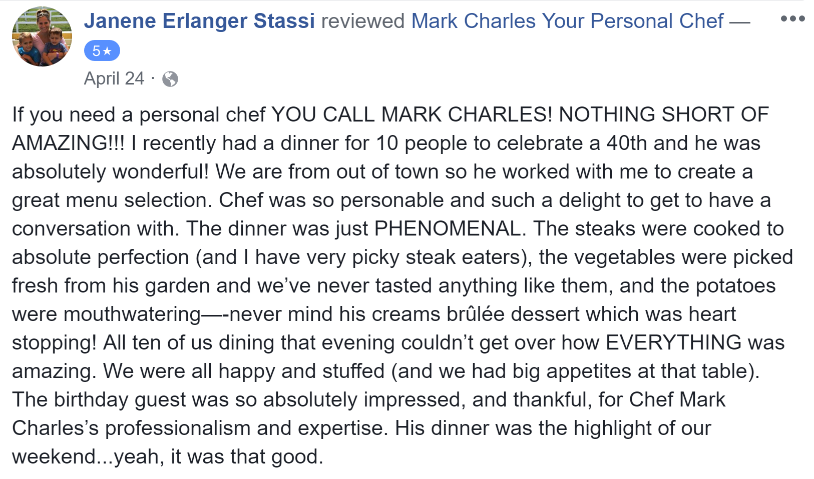

Since 2008
Think of your home or office as one of the world's top restaurants. Learn how hiring a Personal Chef is more affordable than restaurant dining.

"I specialize in fine dining and hearty meals. I approach my local food producers to provide quality organic seasonal menus. My cuisine is French/Italian with a small mix of International styles. As a Personal Chef, my service includes creating your ideal menu, gathering your quality ingredients, setting your table, preparing your gourmet meal, and leaving your kitchen sparkling clean. My experience includes home-cooked family meals, intimate dinners, corporate lunches, larger gatherings, private cooking classes, pantry service, and event planning. I have always had a great passion for food and I get a great pleasure out of seeing empty plates and big, satisfied smiles."

People Are Talking
Thank you all for every one of your kind words over the years. It has been through your word of mouth that I have been able to continually serve the area for so many years. Every review means so much to me. Here are some of the things that people have been saying about Your Personal Chef.
- "This is the first time we used a personal chef and we were all blown away by the amazing food as well as the decor. Everything was delicious and Chef Mark as well as Coleen went above and beyond to make this a wonderful dinner for our family. We can't wait to have him cook for us again. Thank you Chef."
- "Mark was amazing! He was personal and the food was incredible. I would definitely recommend him to anyone looking for a wonderful experience in your own home. Our guests were so impressed with the quality of our dinner and so were we."
"Never had a personal chef. This had to have been one of the best meals i have ever had."
"Awesome food, awesome service. By far THE best."
- "Best chef ever ! Our kids were obsessed with him and the meals were so delicious we are having some delivered. We fell in love with his personality and looked forward to seeing him daily. Looking forward to next year to use him again."
- "Mark, we were so lucky to have found you in our search for a chef while on holiday in Orlando. You were exactly what we needed, great chef to feed the family, great personality. If you are looking for a chef, you have found him. Good to know you will travel. Cause we will need a family chef, from NOW ON!"